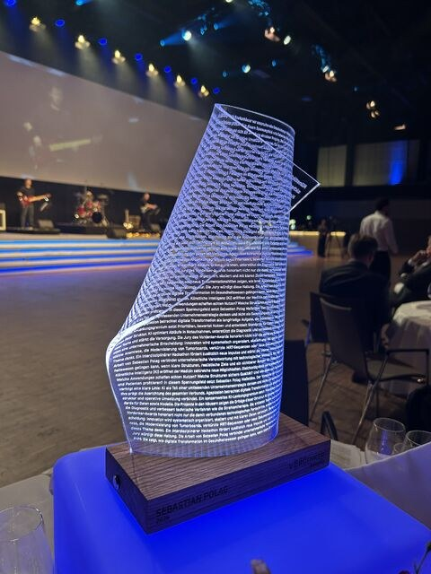

Vor einem Jahr war ich zum ersten Mal auf dem DRG-Forum in Berlin. Ich habe dort verstanden, was DRGs eigentlich sind, und vor allem gespürt, welches Potenzial Künstliche Intelligenz für das Gesundheitswesen hat. Gemeinsam mit Sebastian Polag durfte ich damals bereits einen Vortrag halten, vor einem Kongress mit über 2.500 Teilnehmenden.

Die Entscheidung im Zug
Auf der Rückfahrt hatte ich dieses eine Gefühl, das man schwer ignorieren kann: Hier entsteht gerade etwas, bei dem ich mitmachen will. Also habe ich den Schritt gewagt, raus aus der Universität und rein in die Praxis. Gemeinsam haben wir bei AGAPLESION den Zentralen Dienst KI aufgebaut.
Ein Jahr später
Seitdem ist viel passiert. Wir haben eine KI- und Digitalisierungsstrategie mitentwickelt, erste Pilotprojekte gestartet, Formate und Veranstaltungen etabliert und begonnen, KI strukturiert in die Organisation zu tragen. Vor allem aber ist ein Team entstanden, das diese Themen mit Überzeugung vorantreibt.

Umso mehr freut es mich, dass diese Entwicklung mit dem Vordenker Award des DRG-Forums 2026 ausgezeichnet wurde, verliehen an Sebastian Polag, der die Strategie auf den Weg gebracht hat. Der Award steht für die strategische Arbeit, vor allem aber für die vielen Menschen dahinter: im Zentralen Dienst KI, bei AGAcareIT und in den Fachbereichen, die den Wandel mittragen.